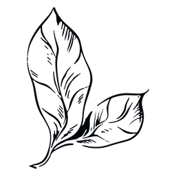
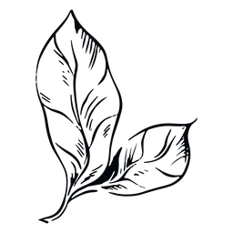

Conheça nossos profissionais!
 

Garak Gazelt
Ela é bastante excêntrica e pode alternar entre bem-humorada e exigente. Apesar disso, ela é extremamente talentosa e se preocupa profundamente com seus pacientes.

Yatsufusa
Ele é uma pessoa tranquila. Só fala quando necessário e você pode sentir-se à vontade em sua presença, quase não vai percebe-lo ali!
Shirayuki
Shirayuki tem uma personalidade muito forte e
brilhante.
Ela é otimista, engenhosa, determinada, mas pode ser gentil e compassiva.
Ela é muito experiente em fitoterapia e medicina.
Ryuu
Ryuu é uma criança que tem uma personalidade madura, calma e apática.
Ele é novo o bastante para você questioná-lo, porém, aqui temos um jovem prodígio!
Você com certeza poderá se beneficiar de suas habilidades excepcionais e, é claro, apreciar
o fato dele ser pequeno e fofo!
Conheça nossa clínica!

Temos uma ampla variedade de produtos.
Nas consultas você poderá escolher o produto que os profissionais especificarem ser melhor
para sua situação.

Temos uma grande biblioteca para futuras pesquisas.

Trabalhamos arduamente para obter os melhores resultados!

Nos esforçamos para atender os clientes da melhor maneira possível!

Temos projetos e prazos para cumprir!

Seguimos o passo a passo do herbalismo.

Todo o cuidado é necessário para os melhores remédios!

Temos pequenas amostras de plantas para estudos mais eficientes!